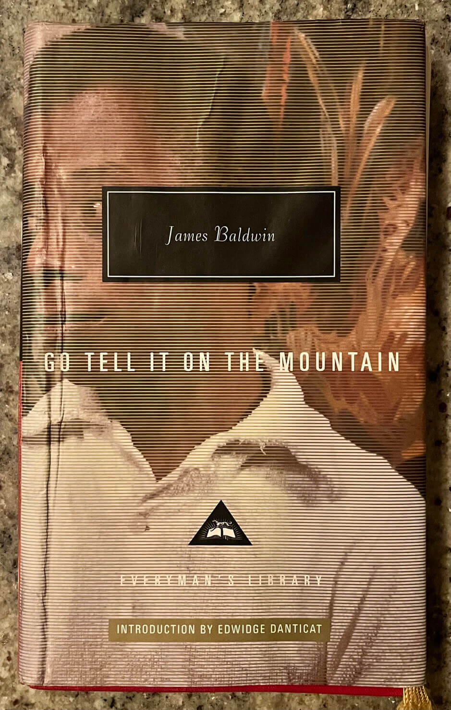
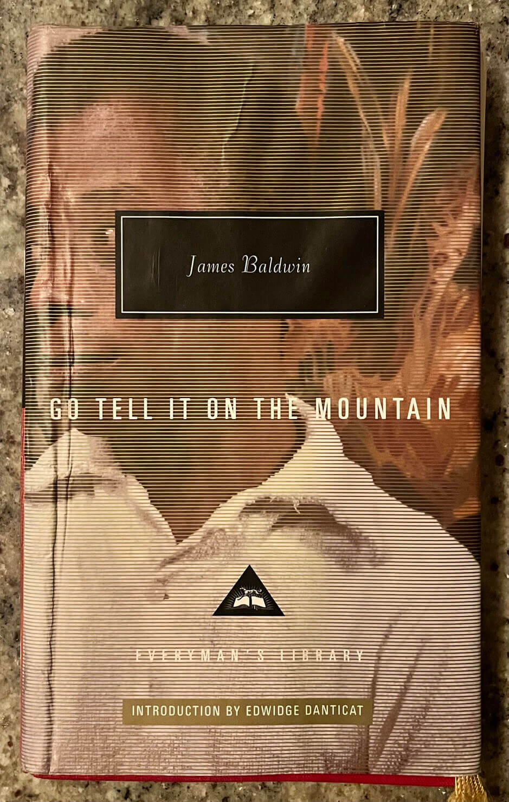
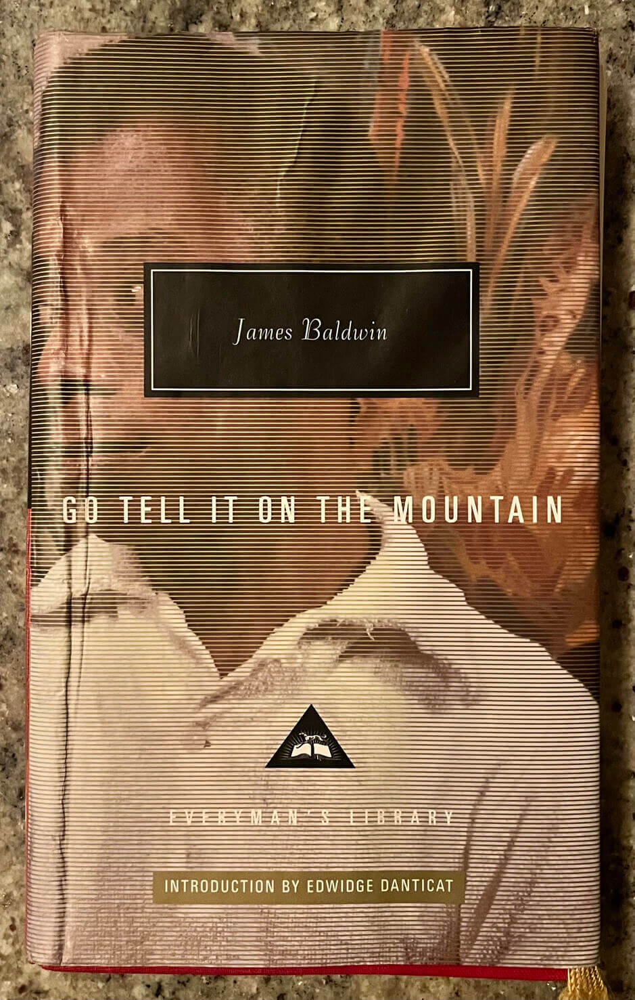

books. for most of my life the practice of reading has felt far out of reach. that changed in early 2021. i committed to a few strategies with which i have found some success in my efforts to read.
each of these books has influenced my formation like sea waves shaping a stone. some i may get to read again. their presence here reminds me how i got to wherever it is that i am.
